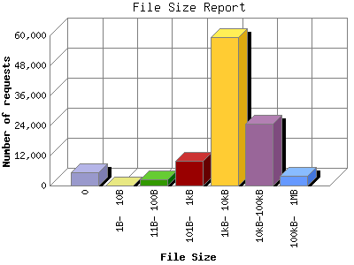

The File Size Report categorizes the size of the file being requested. This can be useful in optimizing site performance. (Remember that on a 28.8Kps modem, it will take on average of 40 seconds to download 100Kb of data.)

| File Size | Number of requests | Percentage of the bytes | |
|---|---|---|---|
| 1. | 0 | 5,148 | 0.00% |
| 2. | 1B- 10B | 1 | 0.00% |
| 3. | 11B- 100B | 2,295 | 0.01% |
| 4. | 101B- 1kB | 9,730 | 0.42% |
| 5. | 1kB- 10kB | 59,322 | 10.34% |
| 6. | 10kB-100kB | 24,530 | 31.70% |
| 7. | 100kB- 1MB | 3,899 | 57.53% |
This report was generated on June 7, 2011 09:47.
Report time frame November 28, 2010 00:14 to June 6, 2011 23:44.
| Web statistics report produced by: analog 6.0 / Report Magic 2.21 |